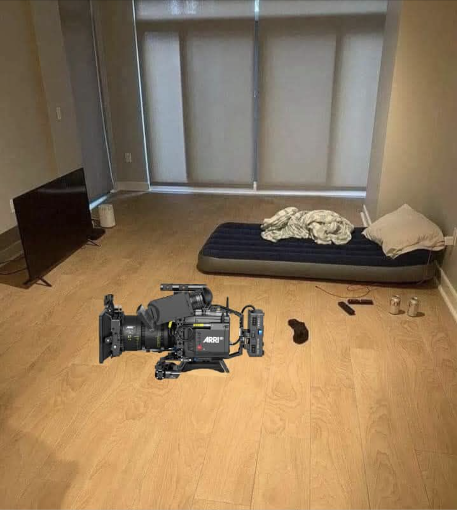

Phrases / notes / ideas
Marginalia
Stay silent. Not everything needs to be said.
Silence is better than unnecessary drama.
If you find someone smarter than you, work with them, don't compete. Competition is a weakness.
The family you create is more important than the family you come from.
Your current job doesn't care about you. They only pay you enough to kill your dreams.
Free yourself from society's advice, most of them have no idea of what they're doing.
Influence: most people drift through life. They have no purpose, no direction, and zero intent. Learn their needs. Lead them.
It's better to have one friend who's:
- happy for you
- supports your win
- encourages your dreams
than a bunch of acquaintances who are
- lazy
- self-centered
- jealous of your success
You'll be 10x happier if you forgive your parents and stop blaming them.
No one will ever come save you. Your life is 100% your responsibility.
Your inner circle should be more focused on money, success, and starting a family.
You don't need 100 self-help books. All you need is actions and self-discipline.
Works of art make rules; rules do not make works of art.Claude Debussy

Notes on minimalism
Minimalism is not empty. It is edited.
Keep the room quiet enough to hear what you actually want.
If you use it every day, it earns the space.
The floor is a tool. Leave some of it visible.
Buy slowly. Remove quickly.
A mattress, a camera, a screen: enough can still make things.
Do not decorate anxiety.
Every object should either work, rest, or mean something.
Less is not a performance. It is maintenance.
The more you own, the more future you owe.
Keep the setup light enough to move.
Empty space is not missing content.